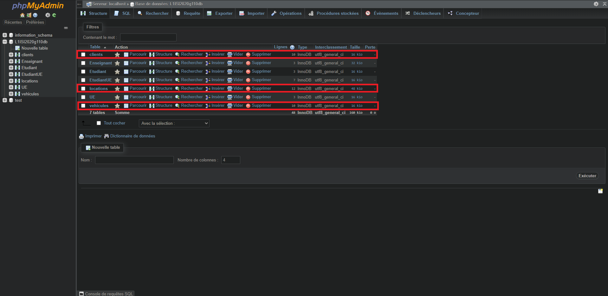

Les difficultés rencontrées
J'ai rencontré quelques difficultés dans la compréhesion du sujet, pour la mise en place et les attentes attendues du projet. Ensuite, tout était clair.
J'ai rencontré quelques difficultés dans la compréhesion du sujet, pour la mise en place et les attentes attendues du projet. Ensuite, tout était clair.
Après de nombreuses tentatives, je n'ai pas parvenu à mettre en place une requête SQL permettant de déterminer l'élément le plus récurrent présent dans une table.
Par exemple, je n'ai pas réussi à déterminer dans la table "locations", le véhicule le plus loué du parc automobile.
De plus, j'ai voulu mettre en place un diaporama afin de rendre plus agréable la disposition des photos de ma base de données. Malgré de nombreuses tentatives, je n'ai pas réussi à le faire fonctionner.
En dehors de mon projet de diaporama, je n'ai pas développé d'idées personnelles particulières.
Celle-ci est composée de 3 tables : "clients", "locations" et "vehicules".
